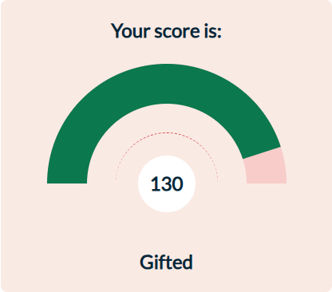

Gifted learners often possess the ability to learn quickly and retain information with little repetition. They thrive in environments that present intellectually challenging and creative tasks. Techniques that involve active exploration and application of knowledge, such as project-based learning and independent research projects, are particularly effective. Additionally, employing advanced mnemonic techniques that involve creating elaborate mental associations can help manage the vast amounts of information they can absorb and recall.
Individuals within the gifted IQ range exhibit exceptional neural efficiency, especially in areas associated with pattern recognition, logical reasoning, and abstract thinking. This heightened neural activity allows for rapid assimilation of complex information and the ability to engage with advanced conceptual material at an early age.
To further enhance their cognitive capabilities, it is crucial to engage these individuals in tasks that challenge their intellect beyond the standard curriculum. Enrichment activities such as advanced science and math courses, programming, and participation in high-level problem-solving competitions can provide the necessary stimulation to foster continued brain development.
The IQ Test (General Intelligence Quotient) measures multiple cognitive dimensions:
| Cognitive Dimension | Score |
|---|---|
| Pattern Recognition | 69% |
| Spatial Orientation | 73% |
| Visual Perception | 75% |
| Analytical Thinking | 90% |
| Abstract Reasoning | 86% |
Those with gifted intelligence have robust reasoning abilities and are often proficient in abstract reasoning. They can understand and integrate new information quickly and effectively, which allows them to excel in complex cognitive tasks.
This group often achieves high levels of education and occupies professional and managerial positions that make use of their analytical skills and strategic thinking. They are likely to be leaders and innovators in their chosen fields.
The main challenge for individuals with gifted intelligence is the potential for boredom and dissatisfaction with routine tasks. They may also encounter high expectations from others, who assume they can handle any intellectual challenge effortlessly.